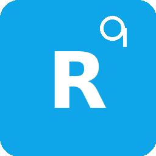

Ruang Dokter
Pengaturan
🌙
Input Konsul — cepat
Nama Dokter
Nama RS
Nama Pasien
Usia (tahun)
JK
F
M
Berat Badan (kg)
Field BB muncul otomatis jika usia < 18 tahun.
Diagnosis (Dx)
Subjektif (S)
Vitals / TTV
TD
HR
RR
T (°C)
SpO₂ (%)
GCS E V M
Pemeriksaan Fisik (isi sesuai format kamu)
Kepala
Thorax
Abdomen
Ekstremitas
Catatan fisik lain (opsional)
Objektif (O) — auto dari TTV & Fisik (bisa diedit)
Terapi IGD (P)
Buat & Tampilkan
Copy
Analisis AI (Quick → ChatGPT)
Simpan ke History
Template Cepat
Pakai
Tambah Template
Kelola Template
Pengaturan
Nama Dokter
Nama RS
Jumlah shift
2
3
4
Simpan
Tutup
Pengaturan disimpan di perangkat ini (localStorage).
Kelola Template
Tutup